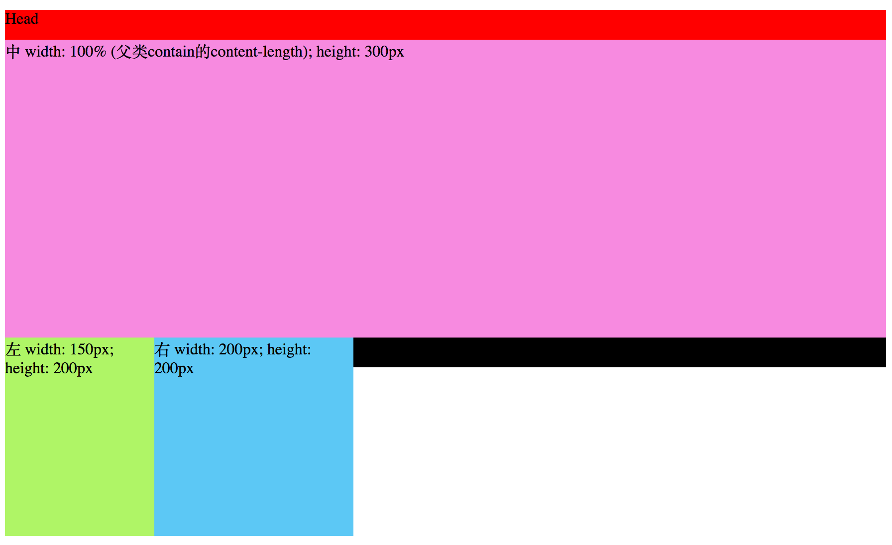

圣杯布局
圣杯布局，两边固定宽度，中间自适应。
步骤
1) 设置header, contain 和 footer的宽高，并且contain中的mid,left和right设置左浮动(float: left)。
HTML, CSS如下：
效果：

效果和你想得一样对吧，两个块元素溢出来了。
注意，contain的宽度并没有设置100%，而是默认的inherit，这点之后会提到为什么。①
W3C盒子模型的 width 是 content-width，而ie盒子模型包括了padding和border的宽度。
2) 接下来，把.left和.right移上去。
.left 添加 margin-left : -100%；
100% 为父类contain的content-width，既左边距向左移动contain的距离。
.right 添加 margin-left : -200px;
200px为 .right的宽度，既左边距向左移动了本身的宽度。
效果：
3）看到 .left和.right覆盖了mid的内容，接下来先.contain添加padding, 在将.left .right 做相对移动：
首先，mid 添加padding : 0 200px 0 150px; // 200px为.right宽度，150px为.left宽度
效果：
其次，添加 .left 和 .right 相对移动。
.left {
position : relative;
left : -150px;
}
.right {
position : relative;
right : -200px;
}
效果：
4)最后别忘了设置 body的min-width: 150 + 150 + 200 = 500 px。
.mid最小宽度是 .left的宽度。
问题
1 .为什么设置mid 为什么最少宽度是150px((既.left的宽度)呢？
因为当 .mid宽度小于150px(既.left的宽度)，也就是.contain的内容宽度小于150px了（因为 mid宽度设置的100%, 就是父类的content宽度。这时 .left 的 margin-left : -100% 是基于.contain的100%内容宽度（小于150px），margin-left 左移都没有150px，当然移不上去，就变型了。
2 回到标注 ① .contain的宽度为什么不设置100%?
100%宽度指的是继承父类content宽度的100%，不是加padding的，如果.contain宽度设置了100%，而.mid也设置了100%, 实际相当于.mid宽度固定，不能自适应，因为.contain的父类就是body了，100%body的内容宽度固定，减去左右padding 150px ，200px，.contain的整个内容宽度是固定的，而.mid又100%继承了.contain的内容宽度，也是固定的，不是自适应的。而不设置的话100%，触发BFC机制（研究中）.mid的宽度会随着.contain的变化自适应。
双飞翼布局
差别在于 第3)步 contain内容被覆盖了，除了使用外围的padding，还可以考虑使用margin。
给contain增加一个内层div— contain-inner, 然后margin:0 200px 0 150px。解决了margin-left移不上去，body最小宽度的问题。
代码如下：
效果：
思考
我就特别不理解，圣杯布局为了什么非要先margin-left : -100%, 然后再 left : -150px呢 导致了最小宽度问题。抖个小机灵，我就调整了下，margin-left : -150px， float ： -100%，这样就解决了 margin-left 移不上去的问题了，果然成功了，怎么缩小，都是那么完美… 就叫它圣杯布局2.0版吧。
不懂为什么要有双飞翼布局呢？加一层div总没有 圣杯布局2.0 优雅吧 why？哪位大神看到，请发邮件给我啊。